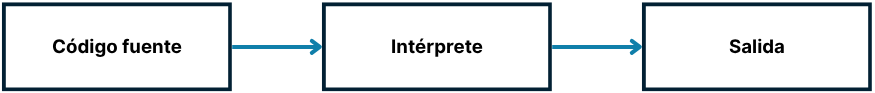
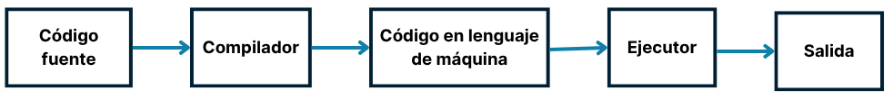

Python se considera un lenguaje interpretado, ya que sus programas se ejecutan a través de un intérprete.

Existen distintos lenguajes de programación que podemos clasificar en dos grandes grupos: lenguajes de alto nivel y lenguajes de bajo nivel.
Lenguajes de alto nivel: Su sintaxis se parece más al lenguaje natural, por lo que son más fáciles de aprender, leer y escribir.
Lenguajes de bajo nivel: Su sintaxis se asemeja más al lenguaje de máquina. Requieren conocer el hardware, así como los registros y direcciones de memoria, lo que los hace más difíciles de escribir y comprender.
Python pertenece al grupo de los lenguajes de alto nivel. Esta es una de las muchas razones por las que es uno de los favoritos para aprender a programar.
Dentro de los lenguajes de alto nivel existen dos tipos de programas que traducen nuestro código al lenguaje de máquina: los intérpretes y los compiladores.
Un intérprete lee nuestro código línea por línea y lo va traduciendo a lenguaje de máquina, ejecutando cada instrucción en el momento.
Un compilador, en cambio, toma todo el código, lo traduce completo a lenguaje de máquina y genera un archivo ejecutable. Luego, ese archivo se puede ejecutar directamente sin necesidad de volver a traducirlo.
Python se considera un lenguaje interpretado, ya que sus programas se ejecutan a través de un intérprete.
En todos los lenguajes de programación solemos comenzar con el clásico “Hello, World!”, que básicamente muestra un mensaje en pantalla.
En Python, la instrucción para mostrar algo en pantalla es:
print()
Es importante escribir esta instrucción tal cual, todo en minúsculas y con paréntesis. El mensaje que quieres mostrar se coloca dentro de los paréntesis, entre comillas:
print("Hello, world!")
Hello, word!
Vamos a escribir un código que muestre: Bienvenido a Python.
print("Bienvenido a Python")
Bienvenido a Python
Escribe un programa que muestre: ¡Felicidades! Ya diste tus primeros pasos en el mundo de la programación.
print("¡Felicidades! Ya diste tus primeros pasos en el mundo de la programación")
¡Felicidades! Ya diste tus primeros pasos en el mundo de la programación